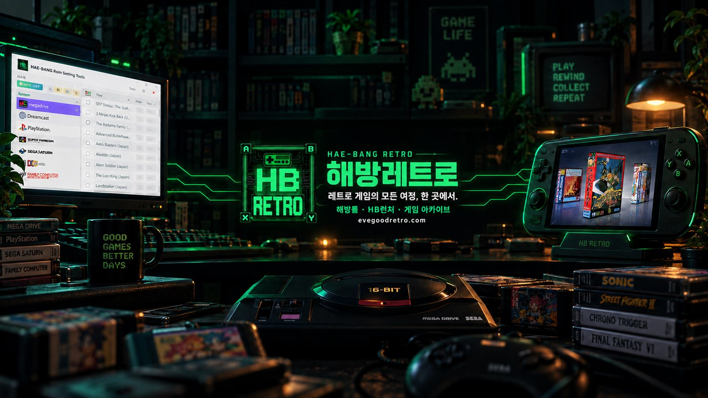

지금 HAE-BANG RETRO는
HB런처 v0.9.2 — 새 테마 '애니풍' · 플레이 기록 · 게임 숨기기
80 ~ 90년대 TV 애니메이션 속 내 방에서 게임을 고르는 새 테마 '애니풍'이 들어왔습니다. 최근 플레이 · 많이 한 순 정렬, 게임 숨기기, 바이오스 확인, 다시 깔아도 돌아오는 설정 사본도 더했습니다. 시연 영상도 함께 보세요.
자세히 보기 →HB런처 v0.9.1 — 새 테마 '라이트 어드밴스' · 전자상가 가게 주인 고르기
밝고 둥근 새 테마 '라이트 어드밴스'가 들어왔습니다 — 넘길 때마다 마림바가 울리고 배경 음악이 흐릅니다. 전자상가 계산대의 캐릭터를 셋 중에서 고르고, 아케이드는 에뮬레이터를 더 고를 수 있습니다. 소개 영상도 함께 보세요.
자세히 보기 →v1.1.9 베타 — BIOS 관리 · 시스템 하위폴더 · RetroPie 지원
가진 BIOS 파일을 보관함에 모아 기기의 RetroArch · 단독 에뮬레이터 자리에 맞춰 보냅니다. 같은 기종의 한글패치 · 핵롬은 시스템 아래 하위폴더로 정리하고, 기기 탐색 창에서 PC 와 기기 사이에 파일을 복사합니다. RetroPie 로도 내보냅니다.
자세히 보기 →세팅하고, 고르고, 플레이하고 — 하나로 이어진 레트로 게임 생활
해방툴이 라이브러리를 세팅하고, 해방런처가 진열해 고르게 하고, 해방레트로아크가 게임을 돌립니다. 세 앱이 서로 주고받는 것을 눌러서 확인해 보세요.
해방레트로 유튜브 채널
처음이라면 여기서 출발! 게임기 세팅부터 한글 패치, 게임이 실행 안 될 때 해결법까지 영상으로 차근차근 보여 드려요.
게임 아카이브운영 중
9만 3천여 개 레트로 게임의 표지 · 스크린샷 · 영상 · 설명서를 웹에서 바로. 그 시절 그 게임, 다 여기 있어요.
해방툴v1.1 공개 · 베타 v1.1.9
롬 폴더만 넣으면 게임을 알아서 찾아 표지 · 영상 · 한글 제목을 채우고, 해방런처와 안드로이드 · 리눅스 게임기, PC로 한 번에 보내 줍니다.
해방런처v0.9 출시
게임을 실물 같은 3D 케이스로 진열하고, 케이스를 열어 팩을 꽂듯 골라 바로 실행. 해방툴이 세팅한 라이브러리를 Windows · Android 에서 그대로 즐겨요.
해방레트로아크1.22.2-hb18
해방레트로에 맞게 다듬은 안드로이드 RetroArch. 필요한 코어는 알아서 받고, 입력 지연 · 화면 끊김 같은 플레이 문제를 고치며 편한 기능을 계속 더합니다. 공식 RetroArch 옆에 나란히 설치돼요.
다른 프론트엔드 · 게임기PC · 안드로이드 · 리눅스
해방런처가 아니어도 괜찮아요. ES-DE · Pegasus 와 Batocera · KNULLI · ROCKNIX · muOS · OnionOS 같은 리눅스 게임기 OS 로도 그대로 보낼 수 있어요.
노드를 누르면 닿은 선이 밝아지고, 아래 연결 줄을 누르면 그곳으로 옮겨 가요.
영상으로 보기
해방툴과 해방런처, 유튜브 재생목록에서 골라 보세요.
 최신
최신해방툴 도구 3종 — 앱 설치 · BIOS 점검 · 세이브 옮기기를 한 번에!
 에뮬게임이 실행 안 된다면? ① 안드로이드편 — ES-DE · 페가수스 + 레트로아크, 가장 많이 하는 실수 4가지
에뮬게임이 실행 안 된다면? ① 안드로이드편 — ES-DE · 페가수스 + 레트로아크, 가장 많이 하는 실수 4가지
 대한글화시대!! 게임 한글 패치를 너무나 쉽게! — 해방툴 우클릭으로 끝!
대한글화시대!! 게임 한글 패치를 너무나 쉽게! — 해방툴 우클릭으로 끝!
 대한글화시대! 패키지 이미지도 한글로 멋지게 — 해방툴 v1.1.1 베타 개발 소식
대한글화시대! 패키지 이미지도 한글로 멋지게 — 해방툴 v1.1.1 베타 개발 소식
 리눅스 게임기(RG35XX · 미유미니)에 게임 넣고 빼기 — 완전 초보를 위한 해방툴 특별 가이드
리눅스 게임기(RG35XX · 미유미니)에 게임 넣고 빼기 — 완전 초보를 위한 해방툴 특별 가이드
 해방툴로 내 갤럭시 폴드를 게임기로 완벽 변신! 완전 초보를 위한 특별 가이드
해방툴로 내 갤럭시 폴드를 게임기로 완벽 변신! 완전 초보를 위한 특별 가이드
 롬 폴더 하나로 끝내는 레트로 게임기 세팅 — 해방툴 5분 입문
롬 폴더 하나로 끝내는 레트로 게임기 세팅 — 해방툴 5분 입문
 Shorts게임 정리부터 게임기로 내보내기까지
Shorts게임 정리부터 게임기로 내보내기까지
 ShortsYour ROM Collection, Finally Organized
ShortsYour ROM Collection, Finally Organized


 Shorts
Shorts Shorts
ShortsHAE-BANG RETRO가 만드는 것들
해방툴 — 롬 세팅 툴
v1.1 공개 배포 중수천 개의 롬을 자동 매칭하고 이미지·영상·매뉴얼과 한글 메타데이터까지 세팅해, ES-DE·Batocera 같은 프론트엔드와 휴대용 게임기로 한 번에 내보내는 Windows 앱. HAE-BANG RETRO의 심장입니다.
HB런처
v0.9 출시게임 케이스를 3D로 진열하는 새로운 에뮬레이터 런처. 케이스를 돌려 보고, 열어서 카트리지를 꺼내 콘솔에 꽂으면 게임이 시작됩니다. RetroArch 기본 호환, Windows·Android 지원. 라이브러리는 해방툴로 채웁니다(해방툴 필수).
게임 아카이브
운영 중설치 없이 브라우저에서 수만 개의 레트로 게임 정보를 둘러보는 웹 아카이브. 시스템·연도·장르로 탐색하고, 한글 제목·설명과 박스아트·스크린샷·영상을 한 자리에서 만나 보세요.
한글화 패치 — 대한글화시대
운영 중흩어져 있는 레트로 게임 한글화 정보를 한 곳에 모은 '대한글화시대'. 한글화된 게임을 찾아보세요. 해방툴의 한글판 매칭·메타데이터와 더 깊이 이어지도록 연동을 준비하고 있습니다.
무엇이든 물어보세요
버그 제보, 기능 제안, 협업 문의 — 아래로 보내 주시면 메일로 답장드립니다.